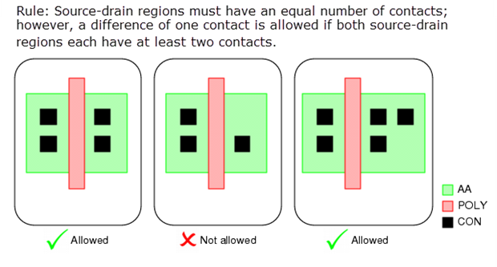

Checking Contact Balance
You can check that the contacts in the source-drain regions on both sides of a gate are in balance.
Figure 1. Contact Balance Concept

The logic for this rule is implemented using conditional expressions and a function that is defined in a DFM Function statement.
Try It!  |
Calibre Advanced DRC (eqDRC) Tutorial and Example Kit Go to this page on Support Center to download the complete eKit. This example is in the contact_via_checks/contact_balance example directory. |